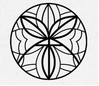

包種茶：
臺灣烏龍茶在 1865 年開始出口外銷，但是在 1873 年發生滯銷情形，於是在 1881 年吳福老引進安溪縣王義程創製的包種茶製法。
因將俗稱「種仔」的青心烏龍品種製成烏龍茶再加以薰花改製，用四方形毛邊紙包裝，並印上茶名及茶行名，而成為包種茶，也可稱
為香片。在台灣清治時期，以包種茶及烏龍茶為代表茶種，有「北包種，南烏龍」之稱。
『文山』包種茶：
在 1912 年南港、內湖及深坑地區王位二人研發出了不薰花卻能散發花香味的改良式包種茶製法。1920 年因戰爭改變銷售市場，由
魏靜時與王水錦兩位先生推廣生產售價較高的改良式包種茶，為現代包種茶製法奠定基礎。當時生產的地區在現今新北市與台北市行
政轄區內，日據時期多隸屬台北州文山郡管轄，而統稱為「文山包種茶」。
以早期的「文山堡」（非指現在的台北市文山區），範圍涵蓋新北市的坪林、石碇、新店、深坑、平溪、汐止，和台北市的南港、木柵
等地區之海拔 400 公尺以上的山區所產出（約有 2300 多公頃）。桃園龍潭、新北市石門、三峽也有少量產製包種茶，但品質及產量
都不及文山區。其中以坪林地區山明水秀，氣候終年溫潤涼爽，雪霧瀰漫，土壤肥沃，故所產之文山包種茶產量最多，品質也最佳（可
說是全台之冠）。但由於文山包種茶的產量過多，且品質又高，故在 1920 年代後期，文山包種茶的價格已經高達每公斤 100 至 200
元，而烏龍茶僅 20 至30 元，因此文山包種茶的產量逐漸減少，而烏龍茶的產量則逐漸增加。
又稱『清茶』，烏龍茶的一種。8~12％發酵，屬輕度發酵的部分發酵茶類，在臺茶風味輪的歸納中隸屬於清香型條形包種茶，是目前
台灣的十大名茶之一。茶樹主要品種為青心烏龍及臺茶 12 號，其中又以青心烏龍茶最受歡迎。青茶：在台灣南投、嘉義一帶，栽種
四季春」茶樹，這種茶葉，用類似於包種茶的輕發酵製程製作出來的茶葉，被稱之為青茶，用來與包種清茶作區分。是概括所有發
酵程度介於綠茶與紅茶之間的半發酵茶。
清茶與青茶是不一樣的，清茶是指包種茶，青茶是指發酵程度較低的茶葉，包種茶是指發酵程度較高的茶葉。
1.採菁
出太陽的中午時段最適合採茶，採摘方式分為：手採及機器採，採摘的茶菁為一心二葉，讓茶葉口感細緻而完美。採完一批茶後需不眠
不休長達24小時左右，才能完成所有炒茶步驟。
2.日光萎凋
採後的茶菁放置於戶外，利用陽光的熱能加速茶葉中的水分蒸發，隨著氧化變化而發酵。葉片經過日光萎凋作用後，漸漸轉為暗綠色，葉
片因水分蒸發消失開始軟化。
3.室內萎凋與靜置
茶菁移人室內持續進行萎凋及靜置攪拌作業，藉由靜置與攬拌交互作用，使茶菁水分重新分配，减低茶梗水分。攪拌使荼葉細胞摩擦破
損，增加多元酚氧化酶及兒茶素作用，進而控制茶葉部分發酵。
4.殺菁
籍由熱破壞茶葉中酵素活性，促使茶葉水分消散、葉片軟化，去除茶葉不良的菁味及穩定茶菁色澤及香氣，利於後續揉捻成形。
5.揉捻
使茶葉捲曲形成條狀，並破壞茶葉的細胞組織，使茶葉的汁液流出附著於表面，增加沖泡時的風味。
6.解塊
揉捻後的茶葉會結瑰，經過攪拌機或人工方式解塊，使茶葉顆粒均勻，形狀美觀。
以上六個步驟結束即完成毛茶(半成品)的作業
7.乾燥
以熱風去除茶葉中的水分，使其含水量降至 5%以下，延長保存期限，並可停止發酵作用及其他生化反應，使品質固定。此外加熱過程亦
可引起化學成分變化促使茶葉香氣形成。而茶葉烘乾後可使形狀固定，方便包裝及運輸。
8.挑枝
整理茶葉外形，揀剔粗枝老葉和劣茶碎茶。挑太慢會讓茶葉置於空氣中過久，可能會使葉潮瀑或吸附到別的味道。
9.包裝
將每一條努力製成的茶葉包装完成。
※補充
● 烏龍茶：在揉捻後會經過團揉工序，目的是要將茶葉製成半球狀。
● 文山包種茶：經過揉捻後則是透過解索再烘乾，目的就是要將茶製成條狀，較符合北部茶菁較薄的特性。
品級分類
為促使茶葉品質均一化及茶葉價格的合理化，台灣省政府農林廳及茶葉改良場配合有關縣市鄉鎮單位，積極輔導以鄉鎮為單位，實施嚴格的
分級包裝，將茶葉的品級標示在包裝盒上，以促銷茶葉，穩定市場。（台北縣文山包種茶推廣中心將茶葉包裝分為梅、蘭、竹、菊等級別，
並分別訂立銷售價格。
簡介：
民國101年起整合新北市文山包種茶產區，由坪林區主辦「新北市文山包種茶比賽」，突破早年鄉鎮級別，開放全市茶農參加，透過行政院農
業委員會茶業改良場，推派專業評審師進行評鑑，依據茶葉的香氣、滋味、形狀、色澤、水色等項目進行評比並分級。原新北市文山包種茶比
賽包裝採用綠底、素描刻畫茶樹貌呈現(如圖下)，該包裝自民國91年春茶開始，一直沿用至106年冬茶止。為提升文山包種茶產品識別度並拓
展消費市場，在地整合各方意見，自107年春茶起更新比賽茶包裝。透過窗花設計，結合茶字、花香、一心二葉等概念，
傳遞「文山包種茶」的特色，並依據獎項配置不同色系，藉此賦予「文山包種茶品牌」更鮮明形象。

.png)
.png)